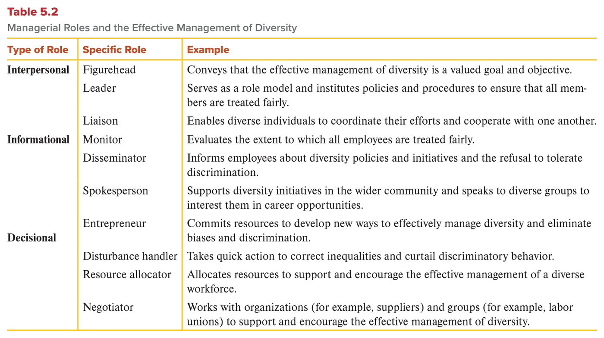
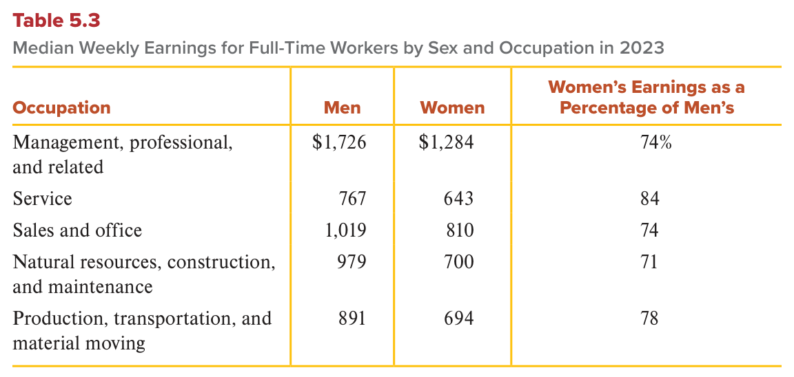

MGT 102 · Chapter 5 · Section 2 of 4:
Managers and the Effective Management of Diversity
Objective LO5-2: Explain the central role that managers play in the effective management of diversity.
Objective LO5-3: Explain why the effective management of diversity is both an ethical and a business imperative.
In the previous lesson you learned that the workforce and the environment around the
organization are becoming more and more diverse (12 sources of diversity and
8 laws). OK, so who is responsible for making this diversity actually work?
The book says: the manager — in every one of the ten roles you
memorized in Chapter 1 (LO5-2). Then it answers a second question: why
should we bother at all? The answer is two reasons together: an
ethical reason (ethical imperative) built on two principles —
distributive justice and procedural justice — and a business reason (business imperative):
competitive advantage, saving costs, and avoiding costly
lawsuits (LO5-3).
Focus from now on four things that trip up students here: (1) the difference between distributive (what is shared out, and on what basis) and procedural (how we decided), (2) mixing up entrepreneur and resource allocator in Table 5.2, (3) the numbers of Table 5.3 — who has the highest percentage and who has the lowest, (4) the number “two times the salary” and the Coca-Cola story. And take the English definitions word for word from the EXAM BOX.
The book sends you back to Chapter 1 and says: in each of your roles, you either promote the effective management of diversity or derail such efforts. The book's example in the main text is the interpersonal roles: the manager conveys that diversity is a valued goal (figurehead), serves as a role model and institutes policies that ensure fairness (leader), and lets diverse individuals and groups coordinate and cooperate inside the organization and at its boundaries (liaison). The rest is all in Table 5.2:
| Category | Role | What it does for diversity (Table 5.2 example) | Key word |
|---|---|---|---|
| Interpersonal شخصية / علاقات · 3 roles |
Figurehead الرمز / الواجهة |
Conveys that the effective management of diversity is a valued goal and objective. | conveys · a valued goal |
| Leader القائد |
Serves as a role model and institutes policies and procedures to make sure all members are treated fairly. | role model · policies and procedures | |
| Liaison حلقة الوصل |
Enables diverse individuals to coordinate their efforts and cooperate with one another. | coordinate · cooperate | |
| Informational معلوماتية · 3 roles |
Monitor المراقب |
Evaluates the extent to which all employees are treated fairly. | evaluates the extent |
| Disseminator الناشر (للداخل) |
Informs employees about diversity policies and initiatives and the refusal to tolerate discrimination. | informs employees | |
| Spokesperson المتحدث (للخارج) |
Supports diversity initiatives in the wider community and speaks to diverse groups to interest them in career opportunities. | wider community · career opportunities | |
| Decisional قرارية · 4 roles |
Entrepreneur المبادر |
Commits resources to develop new ways to manage diversity and remove biases and discrimination. | new ways |
| Disturbance handler معالج الأزمات |
Takes quick action to correct inequalities and curtail discriminatory behavior. | quick action · curtail | |
| Resource allocator موزّع الموارد |
Allocates resources to support and encourage the effective management of a diverse workforce. | allocates resources to support | |
| Negotiator المفاوض |
Works with organizations (for example, suppliers) and groups (for example, labor unions) to support diversity management. | suppliers · labor unions |

This is Table 5.2 in the book (p. 132). It has three columns: Type of Role, then Specific Role, then Example. The first column has only three categories: Interpersonal (top, 3 roles), Informational (middle, 3 roles), Decisional (bottom, 4 roles) = 10 roles. Be careful as you read it: the word Decisional is printed in the middle of its cell, so the first role under it is Entrepreneur — do not count it as informational just because it comes after Spokesperson. And the order of the categories here (interpersonal first) is different from Table 1.1 in Chapter 1 (decisional first) — so do not rely on the order, rely on the meaning. How to read it: the Example column is the new part — each sentence links the role to diversity. What they ask: they give you a scenario or the example sentence and ask which role or which category; the two most famous traps: entrepreneur (new ways) against resource allocator (allocates to support), and disseminator (to employees inside) against spokesperson (to the community outside).
And the book's summary at the end of the chapter (Summary and Review) puts it together: the workforce and the environment are more and more diverse, and managing this diversity effectively is an essential component of management; in each role the manager can encourage it — and it is an ethical and a business imperative together.
In each of their managerial roles (see Chapter 1), managers can either promote the effective management of diversity or derail such efforts; thus, they are critical to this process. For example, in their interpersonal roles, managers can convey that the effective management of diversity is a valued goal and objective (figurehead role), can serve as a role model and institute policies and procedures to ensure that all organizational members are treated fairly (leader role), and can enable diverse individuals and groups to coordinate their efforts and cooperate with each other both inside the organization and at the organization's boundaries (liaison role).
Both the workforce and the organizational environment are increasingly diverse, and effectively managing this diversity is an essential component of management. In each of their managerial roles, managers can encourage the effective management of diversity, which is both an ethical and a business imperative.
Because of the formal authority the manager has, his influence is usually bigger than that of rank-and-file employees. So when the manager commits to supporting diversity — as the NFL did in A Manager's Challenge at the start of the chapter — his authority, position, power, and status influence other members to make the same commitment.
Research on social influence supports this link: people are influenced and persuaded by others who have high status.
| # | The result | The book's words |
|---|---|---|
| 1 | His commitment legitimizes the diversity efforts of others | legitimizes the diversity management efforts of others |
| 2 | Resources are devoted to these efforts, and all members feel their diversity-related efforts are supported and valued | resources are devoted · supported and valued |
| 3 | When employees see the manager confident in the abilities and talents of diverse employees, they become confident too, and this reduces any prejudice they have that comes from ignorance or stereotypes | express confidence · reduce prejudice |
Following the same logic, top management commitment and rewards for supporting diversity are often named as critical ingredients for the success of diversity management initiatives. This sentence comes back in lesson 4 in the steps for managing diversity.
| The factor | What the book says |
|---|---|
| 1. Starting at a slight disadvantage البداية بعيب بسيط |
Women, African Americans, Hispanics, and other underrepresented groups often start at a slight disadvantage because of how others see them in the organization — especially when they are a numerical minority. The book quotes Virginia Valian (a psychologist at Hunter College who studies gender): “In most organizations women begin at a slight disadvantage. A woman does not walk into the room with the same status as an equivalent man, because she is less likely than a man to be viewed as a serious professional.” — in other words, a woman walks into the room less likely to be seen as a “serious professional” than an equivalent man. |
| 2. Small differences accumulate الفروق الصغيرة تتراكم |
Research says that slight differences in treatment accumulate and become major disparities over time. The book's example: a small bias in favor of men in promotions leads over time to a big difference in the number of male and female managers. And although women and minorities are sometimes advised “don't complain” when they are treated unfairly, research by Valian and others says: differences based on irrelevant distinctions such as race, gender, and ethnicity turn into major disparities in important outcomes like promotions — if they are ignored. |
The bottom line: the manager has an obligation — from an ethical side and from a business side — to prevent any disparities in treatment and outcomes caused by irrelevant distinctions such as race or ethnicity. This is the bridge to the next two concepts.
LO5-3.The book itself tells you: “see if you can identify the roles filled by Stryker's CEO, Kevin Lobo”. This table is our own reading for practice — the book gives no official answer:
| Lobo's action | Closest role in Table 5.2 | Why |
|---|---|---|
| Takes part in employee resource groups and is a role model | Leader | the book uses the same words: serves as a role model |
| Flexible work arrangements applied equally across genders | Leader | institutes policies and procedures that ensure fairness for everyone |
| Speaks about the value of hiring for diversity | Figurehead | conveys that diversity is a valued goal (if he speaks to an audience outside the company, it becomes spokesperson) |
| Invites employees to form resource groups | Liaison | enables diverse people to coordinate and cooperate |
| Measurable diversity goals that count in performance assessments | Monitor | evaluates the extent to which everyone is treated fairly |
Given the formal authority that managers have in organizations, they typically have more influence than rank-and-file employees. When managers commit to supporting diversity, as is the case within the National Football League as discussed in “A Manager's Challenge,” their authority and positions of power and status influence other members of an organization to make a similar commitment. Research on social influence supports such a link: People are likely to be influenced and persuaded by others who have high status.
When managers commit to diversity, their commitment legitimizes the diversity management efforts of others. In addition, resources are devoted to such efforts, and all members of an organization believe that their diversity-related efforts are supported and valued. Consistent with this reasoning, top management commitment and rewards for the support of diversity are often cited as critical ingredients in the success of diversity management initiatives.
The first factor is that women, African Americans, Hispanics, and other underrepresented groups often start out at a slight disadvantage due to how they are perceived by others in organizations, particularly in work settings where they are a numerical minority. The second factor is that research suggests that slight differences in treatment can accumulate and result in major disparities over time.
The book says: managing diversity effectively is not only good business sense (concept 5), it is also an ethical imperative in U.S. society. And two moral principles guide the manager to meet this imperative: distributive justice and procedural justice.
| Term | The book's definition (memorize it word for word) | What it means |
|---|---|---|
| Distributive justice العدالة التوزيعية |
A moral principle calling for fair distribution of pay, promotions, and other organizational resources based on meaningful contributions that individuals have made and not personal characteristics over which they have no control. | a moral principle that calls for fair distribution of pay, promotions, and other resources based on meaningful contributions, not on personal characteristics the person cannot control. |
The principle dictates a fair distribution of six things, by six kinds of contribution:
| What is distributed (6) | Based on meaningful contributions (6) | Not based on (the book's examples) |
|---|---|---|
| 1. pay | 1. time | irrelevant personal characteristics over which individuals have no
control: gender · race · age |
| 2. promotions | 2. effort | |
| 3. job titles | 3. education | |
| 4. interesting job assignments | 4. skills | |
| 5. office space | 5. abilities | |
| 6. other organizational resources | 6. performance levels |

This is Table 5.3 in the book (p. 134), and its source is the Bureau of Labor Statistics. It has four columns: Occupation, then Men, then Women, then Women's Earnings as a Percentage of Men's, and five occupations. The numbers are median weekly earnings in dollars for full-time workers — the $ sign is printed in the first row only. How to read it: the last column is the most important — women's pay as a percentage of men's, and every percentage is under 100 = women earn less in every occupation. Highest percentage (smallest gap): Service = 84%. Lowest percentage (biggest gap): Natural resources, construction, and maintenance = 71%. Highest pay in dollars for both sexes: Management, professional, and related ($1,726 against $1,284), and still its percentage is only 74%. Sales and office = 74% — the book's example of an occupation dominated by women where men still earn more. And Production, transportation, and material moving = 78%. A note: if you calculate the Sales and office row yourself (810 ÷ 1,019) you get about 79%, not 74 — but in the exam, use the numbers printed in the table as they are. What they ask: “which occupation has the highest/lowest percentage?”, “which occupation pays the most?”, and linking it to distributive justice.
Effectively managing diversity not only makes good business sense (which is discussed in the next section) but also is an ethical imperative in U.S. society. Two moral principles guide managers in their efforts to meet this imperative: distributive justice and procedural justice.
The principle of distributive justice dictates fair distribution of pay, promotions, job titles, interesting job assignments, office space, and other organizational resources among members of an organization. These outcomes should be distributed according to the meaningful contributions that individuals have made to the organization (such as time, effort, education, skills, abilities, and performance levels) and not irrelevant personal characteristics over which individuals have no control (such as gender, race, or age). Managers have an obligation to ensure that distributive justice exists in their organizations. This does not mean that all members of an organization receive identical or similar outcomes; rather, it means that members who receive more favorable outcomes than others have made substantially higher or more significant contributions to the organization.
For example, across occupations, women consistently earn less than men (see Table 5.3), according to data collected by the U.S. Bureau of Labor Statistics. Even in occupations dominated by women, such as sales and office occupations, men tend to earn more than women.
| Term | The book's definition (memorize it word for word) | What it means |
|---|---|---|
| Procedural justice العدالة الإجرائية |
A moral principle calling for the use of fair procedures to determine how to distribute outcomes to organizational members. | a moral principle that calls for using fair procedures to determine how outcomes are distributed to the members of the organization. |
It applies to typical procedures such as (3):
| # | The manager… | The book's words |
|---|---|---|
| 1 | carefully appraises the employee's performance | carefully appraise an employee's performance |
| 2 | takes into account any environmental obstacles to high performance beyond the employee's control — the book's three examples: lack of supplies, machine breakdowns, dwindling customer demand for a product | environmental obstacles … beyond the employee's control: lack of supplies, machine breakdowns, dwindling customer demand |
| 3 | ignores irrelevant personal characteristics such as the employee's age or ethnicity | ignore irrelevant personal characteristics such as the employee's age or ethnicity |
And like distributive justice, procedural justice is necessary not only for ethical conduct, but also to avoid costly lawsuits.
| Distributive justice | Procedural justice | |
|---|---|---|
| The question | What is distributed, to whom, and on what basis? | How do we decide the distribution? |
| Key words | fair distribution · outcomes · meaningful contributions | fair procedures · how to distribute |
| The book's examples | pay, promotions, job titles, interesting assignments, office space | appraising performance, deciding on a raise or promotion, deciding who is laid off when downsizing |
| Not allowed | distributing by gender, race, or age | letting age or ethnicity into the procedure |
| Why it matters | both: ethical behavior + a legal obligation / avoiding costly lawsuits | |
Link to Chapter 4: the justice rule there is one of four rules for ethical decisions (distributing benefits and harms fairly). Here in Chapter 5 you have two principles for diversity with different names: distributive and procedural.
The principle of procedural justice requires that managers use fair procedures to determine how to distribute outcomes to organizational members. This principle applies to typical procedures such as appraising employees' performance, deciding who should receive a raise or a promotion, and deciding whom to lay off when an organization is forced to downsize.
Procedural justice exists, for example, when managers (1) carefully appraise an employee's performance; (2) take into account any environmental obstacles to high performance beyond the employee's control, such as lack of supplies, machine breakdowns, or dwindling customer demand for a product; and (3) ignore irrelevant personal characteristics such as the employee's age or ethnicity. Like distributive justice, procedural justice is necessary not only to ensure ethical conduct but also to avoid costly lawsuits.
The main sentence: diverse employees can be a source of competitive advantage, helping the organization give customers better goods and services.
| # | The reason | The book's example |
|---|---|---|
| 1 | Better managerial decisions — the variety of points of view and approaches to problems and opportunities improves the manager's decisions | A frozen food company wants ideas for meals that appeal to health-conscious and time-conscious customers tired of the same old options. Who will come up with more creative ideas: a group of white women with marketing degrees from Yale who grew up in upper-middle-class families in the Northeast, or a group inclusive of multiple races and genders who grew up with different income levels in different parts of the country and studied at geographically dispersed business schools? Most people agree: the diverse group has a wider range of creative ideas. The book itself says the example is simplistic, but it underscores the idea of competitive advantage. |
| 2 | Customers are becoming diverse like the workforce | IKEA varies the selection of products in its stores from city to city and region to region to suit local customers' needs and tastes. |
| 3 | Employees with diverse backgrounds are attuned to what diverse segments of the market want and do not want | Automakers put women on their design teams so the needs and desires of female customers are taken into account in new car design. |
| 4 | Retention of valued employees — lowers the costs of hiring replacements for people who quit, and makes sure everyone is highly motivated | Details below ↓ (the “two times the salary” number). |
| 5 | Suppliers: managers and organizations concerned about diversity insist that their suppliers also support diversity | — (the book gives it as a reason with no example) |
| 6 | Avoiding costly lawsuits — from both the business and the ethical side | The Coca-Cola story below ↓. |
End of the section: now it is clear that managing diversity is a necessity on both ethical and business grounds. And the next question: why does diversity give managers — and all of us — so many challenges? The answer is in lesson 3: perception.
Diverse organizational members can be a source of competitive advantage, helping an organization provide customers with better goods and services. The variety of points of view and approaches to problems and opportunities that diverse employees provide can improve managerial decision making.
Thus, recruiting a diverse workforce has to be followed with ongoing effective management of diversity to retain valued organizational members. According to a recent report, it costs employers an average of two times the amount of that employee's salary to hire a replacement if the employee leaves the organization.
More and more, managers and organizations concerned about diversity are insisting that their suppliers also support diversity. Finally, from both business and ethical perspectives, effective management of diversity is necessary to avoid costly lawsuits.
By now it should be clear that effectively managing diversity is a necessity on both ethical and business grounds.
The questions are in English because the exam is in English. Answer first, then open the solution. If you miss question 1, go back to the roles table in the first concept; if you miss question 3, go back to the “distributive against procedural” table in the fourth concept.
B. The Entrepreneur example in Table 5.2 says, word for word: Commits resources to develop new ways to effectively manage diversity and eliminate biases and discrimination — the key word is new ways. The trap in A: resource allocator also has “resources”, but it allocates resources to support, it does not develop something new. C is a trap too: disturbance handler = quick action that corrects an unfairness and stops discrimination. And D: liaison = lets diverse people coordinate and cooperate, and its category is interpersonal, not decisional.
B. The book says: slight differences in treatment can accumulate and result in major disparities over time, and its example is a small bias in favor of men in promotions that becomes a big difference in the number of managers. The trap in A: this is exactly the “don't complain, it will go away” idea that the research disagrees with. C is a trap: the book names promotions as an outcome that is affected. And D is the opposite of the book: the slight disadvantage shows more when the group is a numerical minority.
B. These are the three things the book lists for procedural justice, in order: appraise carefully, take into account environmental obstacles beyond the employee's control (machine breakdowns is one of the examples), and ignore age and ethnicity — and “deciding whom to lay off when downsizing” is one of the procedures the principle applies to. The trap in A: distributive is about the outcome itself (who got what, based on contribution), and this question describes the way of deciding. C is one of the four rules in Chapter 4. And D: social influence = people are influenced by those with high status; it has nothing to do with this.
B. Service = 84%, the highest percentage in the table (the smallest gap). The trap in A: the highest pay in dollars ($1,726 and $1,284), but its percentage is only 74% — the question asks about the percentage, not the amount. C = 74%, the book's example of an occupation dominated by women where men still earn more. And D = 71%, the lowest percentage, which means the biggest gap — if the question said lowest, this would be the answer.
C. The book says the exact opposite: recruiting a diverse workforce has to be followed with ongoing effective management of diversity to retain valued organizational members — because diverse employees who feel treated unfairly will leave, and a replacement costs two times the salary. A is a correct reason (the frozen food example), B is correct (retention), and D is correct (the Coca-Cola story). The question uses NOT, so do not rush and pick the first true sentence you see.
| Term | What it means | Watch out for |
|---|---|---|
| Effective management of diversity | Managing a diverse workforce so everyone is treated fairly and can contribute | an essential component of management; both an ethical and a business imperative |
| Critical managerial roles | The ten roles in which a manager can promote or derail diversity | in every role the manager either promotes or derails; 10 = 3 + 3 + 4 |
| Figurehead | Conveys that diversity is a valued goal and objective | interpersonal; symbolic |
| Leader | A role model + policies and procedures that ensure fairness | interpersonal; role model belongs here |
| Liaison | Enables diverse individuals to coordinate their efforts and cooperate | interpersonal; coordinate … and cooperate |
| Monitor | Evaluates the extent to which all employees are treated fairly | informational; it evaluates |
| Disseminator | Informs employees about diversity policies and the refusal to tolerate discrimination | informational; to employees (inside) |
| Spokesperson | Supports diversity in the wider community and interests diverse groups in careers | informational; the wider community (outside) |
| Entrepreneur | Commits resources to develop new ways to manage diversity | decisional; new ways — not resource allocator |
| Disturbance handler | Takes quick action to correct inequalities and stop discrimination | decisional; quick action |
| Resource allocator | Allocates resources to support the management of a diverse workforce | decisional; allocates to support — nothing new |
| Negotiator | Works with suppliers and labor unions to support diversity | decisional; outside organizations and groups |
| Unconscious biases | Biases people have without knowing it | research on them is vital to see the subtle ways of unfairness over time |
| Formal authority | The official power a manager gets from his position | makes his influence bigger than rank-and-file employees |
| Rank-and-file employees | Ordinary employees with no managerial position | less influence than a manager with formal authority |
| Social influence | People are influenced and persuaded by others who have high status | high status — not the majority |
| Top management commitment and rewards | Critical ingredients in the success of diversity initiatives | both together |
| Prejudice | A negative judgment made in advance | goes down when the manager shows confidence in diverse employees; it comes from ignorance or stereotypes |
| Underrepresented groups | Groups with fewer members in the organization than they should have | start at a slight disadvantage because of how others see them |
| Slight disadvantage | A small handicap at the start because of how others see you | slight, not major; shows most in a numerical minority (Valian's quote) |
| Numerical minority | A group with fewer people than others in the work setting | where the slight disadvantage shows most |
| Irrelevant distinctions | Differences that have nothing to do with the job, such as race, gender, and ethnicity | they accumulate into major disparities if they are ignored |
| Ethical imperative | A duty that comes from ethics | guided by two principles: distributive and procedural justice |
| Distributive justice | Fair distribution of pay, promotions, and resources based on meaningful contributions | what is distributed; not identical outcomes |
| Meaningful contributions | What a person gives the organization | six: time · effort · education · skills · abilities · performance levels |
| Procedural justice | Using fair procedures to decide how outcomes are distributed | how we decide; three numbered things |
| Environmental obstacles | Problems outside the employee's control that block high performance | lack of supplies · machine breakdowns · dwindling customer demand — procedural |
| Business imperative | A duty that comes from business needs | the second half of LO5-3; Stryker calls diversity a business imperative |
| Competitive advantage | What makes an organization better than its competitors | diverse employees can be a source — not guaranteed just by hiring |
| Retention | Keeping valued employees | lowers replacement costs and keeps people motivated; needs ongoing management after hiring |
| Turnover | Employees leaving the organization | a replacement costs two times the salary + indirect costs (knowledge · search time · learning time) |
| Class-action suit | A lawsuit brought by a group of people together | Coca-Cola, 2000, $192 million; it can tarnish a company's image |
| Sense of complacency | Feeling satisfied and stopping the effort | why Coca-Cola's progress was thwarted — 5 points lower after 20 years |
| Employee resource groups | Groups of employees that promote inclusion | Lobo takes part as a role model |
| Table 5.2 — Managerial Roles and the Effective Management of Diversity | The ten roles with one diversity example each | 3 categories · 10 roles; Entrepreneur is the first role under Decisional |
| Table 5.3 — Median Weekly Earnings by Sex and Occupation | Women's weekly pay as a percentage of men's in five occupations | highest Service 84 · lowest Natural resources… 71 · Sales and office 74 |
These are the general English words on this page, not the management terms. Learn them and the textbook gets much easier to read.
| Word | Part of speech | العربية | Example sentence from this lesson |
|---|---|---|---|
| accumulate | verb | يتراكميعني يزيد شوي شوي فوق بعض لين يصير كوم كبير | Research suggests that slight differences in treatment can accumulate and result in major disparities over time. |
| adversely | adverb | بشكل سلبي / ضاريعني بطريقة تضر وتأثّر بالسالب | Research on how different groups are treated and the unconscious biases that might adversely affect them is vital. |
| appraise | verb | يقيّميعني تحكم على شغل أحد وتعطيه درجة بعد ما تشوفه زين | Procedural justice exists, for example, when managers carefully appraise an employee's performance. |
| attuned | adjective | متناغم / فاهميعني حاسّ وفاهم وش يبون الناس بدون ما يقولون له | Employees with diverse backgrounds are likely to be attuned to what goods and services diverse segments of the market want and do not want. |
| complacency | noun | الرضا عن النفس / التراخييعني تحس إنك تمام وتوقف تتعب وتتطوّر | The company has redoubled its efforts because its progress has been thwarted by a “sense of complacency.” |
| convey | verb | يوصّل / ينقليعني توصّل فكرة أو رسالة للناس بكلامك أو تصرّفك | Managers can convey that the effective management of diversity is a valued goal and objective. |
| curtail | verb | يحدّ من / يوقفيعني تقصّ الشي وتوقفه أو تقلّله | The disturbance handler takes quick action to correct inequalities and curtail discriminatory behavior. |
| derail | verb | يخرّب / يحرف عن المسارزي القطار لما يطلع من سكّته، يعني تخرّب الشي وتوقفه عن هدفه | In each of their managerial roles, managers can either promote the effective management of diversity or derail such efforts. |
| dictate | verb | يفرض / يقتضييعني يحدّد لك وش لازم يصير وما يخلّيك تختار | The principle of distributive justice dictates fair distribution of pay, promotions, job titles, interesting job assignments, office space, and other organizational resources. |
| disparity | noun | تفاوت / فجوةيعني فرق كبير وغير عادل بين ناس وناس | Slight differences in treatment can accumulate and result in major disparities over time. |
| dispersed | adjective | متفرّق / منتشريعني موزّع في أماكن كثيرة، مو في مكان واحد | The diverse group studied at a variety of geographically dispersed business schools. |
| dwindle | verb | يتناقص / يقلّيعني ينقص شوي شوي لين يقارب يخلص | Managers take into account obstacles such as lack of supplies, machine breakdowns, or dwindling customer demand for a product. |
| equivalent | adjective | مكافئ / معادليعني نفسه بالضبط في المستوى والقيمة | A woman does not walk into the room with the same status as an equivalent man. |
| ignorance | noun | جهليعني ما تعرف عن الشي وتحكم عليه بدون علم | Seeing managers express confidence in diverse employees helps reduce any prejudice people have as a result of ignorance or stereotypes. |
| inch | verb | يتقدّم شوي شوييعني يمشي خطوة صغيرة ورا خطوة، ببطء بس يقرّب | Today organizations are inching closer toward the ideal of distributive justice. |
| institute | verb | يؤسّس / يطبّقيعني تبدأ نظام أو قانون جديد وتمشّيه رسمياً | The leader serves as a role model and institutes policies and procedures to ensure that all members are treated fairly. |
| legitimize | verb | يعطي شرعيةيعني يخلّي الشي مقبول ورسمي والناس ما تستغربه | When managers commit to diversity, their commitment legitimizes the diversity management efforts of others. |
| obligation | noun | التزام / واجبيعني شي لازم تسويه، مو على كيفك | Managers have an obligation to ensure that distributive justice exists in their organizations. |
| persuade | verb | يقنعيعني تخلّي أحد يغيّر رأيه ويوافقك | People are likely to be influenced and persuaded by others who have high status. |
| redouble | verb | يضاعف (الجهد)يعني تشدّ حيلك أكثر من أوّل بكثير | More than 20 years later, the company has redoubled its efforts to ensure a diverse workforce. |
| settle | verb | يسوّي (قضية) / يتصالحيعني تنهي القضية باتفاق وتدفع، بدل ما تكمّل في المحكمة | In 2000, the Coca-Cola Company settled a class-action suit brought by African American employees at a cost of $192 million. |
| simplistic | adjective | مبسّط زيادةيعني مبسّط لدرجة إنه ما يغطّي كل التفاصيل | Although this example is simplistic, it underscores one way in which diversity can lead to a competitive advantage. |
| substantially | adverb | بشكل كبير / ملحوظيعني بفرق واضح وكبير، مو شوي | Members who receive more favorable outcomes than others have made substantially higher or more significant contributions to the organization. |
| subtle | adjective | خفي / دقيقيعني شي صغير وما تنتبه له بسهولة | Research helps managers become aware of the many subtle ways in which diverse employee groups can come to be treated unfairly over time. |
| tarnish | verb | يشوّه / يلطّخيعني يوسّخ سمعتك ويخلّي صورتك عند الناس أسوأ | The damage such lawsuits cause goes beyond the money; it can tarnish a company's image. |
| thwart | verb | يعرقل / يُفشليعني يوقف خطتك ويمنعها تنجح | The company's progress has been thwarted by a “sense of complacency.” |
| underscore | verb | يؤكّد / يبرزيعني يحط خط تحت الفكرة عشان تبان إنها مهمة | Although this example is simplistic, it underscores one way in which diversity can lead to a competitive advantage. |
Built from the text of the textbook Contemporary Management (Jones & George, McGraw Hill) —
Chapter 5: Managing Diverse Employees in a Multicultural Environment, section Managers and the Effective Management
of Diversity (with Critical Managerial Roles, The Ethical Imperative to Manage Diversity Effectively, and
Effectively Managing Diversity Makes Good Business Sense), objectives LO5-2 and LO5-3
(pages 131–135), with the book's Summary and Review.
Summarized only: the Manager as a Person box (Stryker CEO
Promotes Diversity, pages 131–132) is given in its main points, and linking Lobo's actions to the roles is our own
practice, not an answer from the book. The NFL challenge and the kinds of diversity are in lesson 1, and perception is in
lesson 3.